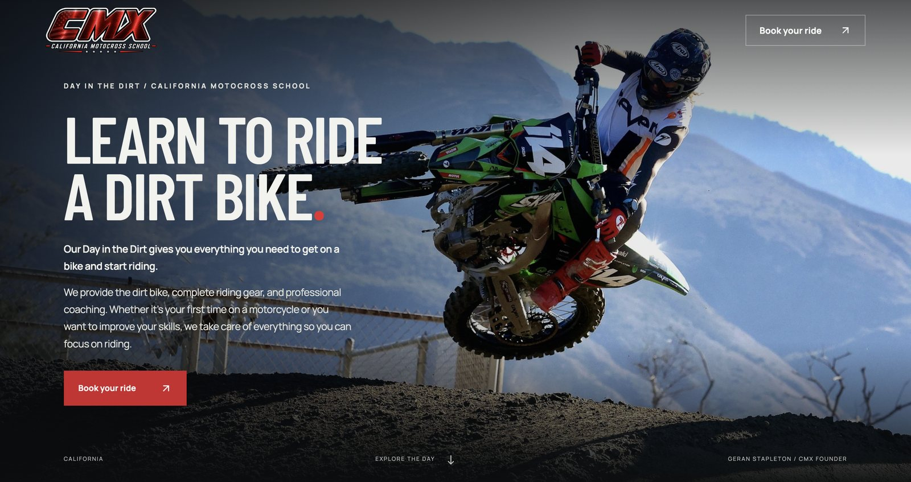
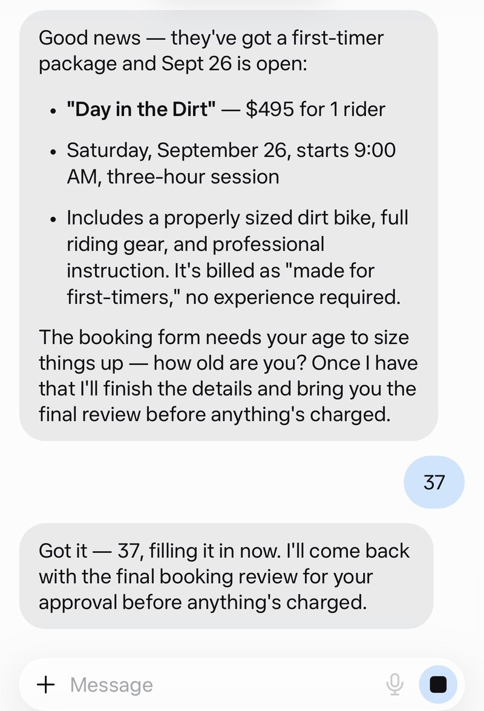
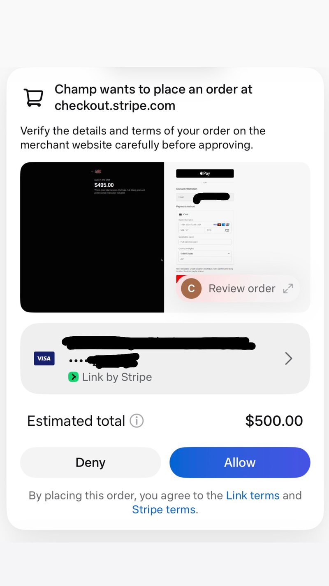

An AI Agent Booked A Dirt Bike Lesson
Without Visiting The Website.
How DSE Group rebuilt California Motocross School to be readable, quotable, and bookable by AI agents, and what happened when a Meta Muse agent was pointed at it.

DSE Group rebuilt California Motocross School's website to be machine-readable by AI agents. A Meta Muse agent then completed the entire booking flow on its own: finding the Day in the Dirt first-timer package, confirming that Saturday 26 September was open, filling in the booking form, and presenting a single approve or deny payment card for the 495 dollar session through Link by Stripe. Total human effort: one prompt and one tap.
Agents are shopping. Most websites cannot be shopped.
- AI assistants are already buying, booking, and comparing on behalf of real customers, and the number of them doing it grows every month.
- Most business websites are invisible to them. Offers buried in scripts, prices that live only inside images or layout, no machine-readable structure describing what is for sale.
- Even visible sites stall at the transaction. A booking flow built purely for human clicks is a wall an agent cannot climb.
- If an agent cannot buy from you, it buys elsewhere. You do not see the lost sale, because the customer never arrived.
The rebuild, in four moves.
California Motocross School had a real offer and real availability. What it did not have was a version of that offer software could read and act on. We rebuilt for both audiences at once: the rider browsing on a phone, and the agent parsing on their behalf.
Semantic page structure an agent can parse without guessing: a clear heading hierarchy, content in the document rather than assembled by scripts, and every offer element exposed as text.
Package name, price, duration, inclusions, and availability published as structured data, so an agent quotes the real number instead of inferring one from a layout.
A plain text map of the business and its offers at the site root, written for AI systems rather than browsers, so assistants get an unambiguous summary of what is sold and where to act on it.
A path from offer to payment that software can finish end to end, with the approval step kept firmly in human hands.
One prompt. Five steps. No website visit.
We pointed a Meta Muse agent at the rebuilt site with a single instruction and recorded what it did.
One Prompt
The instruction was ordinary language, the kind a customer would actually use: book me a dirt bike lesson. No link, no package name, no date.
The Agent Found The Right Package
It identified the Day in the Dirt first-timer session at 495 dollars for one rider, and read back what was included: a properly sized dirt bike, full riding gear, and professional instruction, billed for first-timers with no experience required.
It Confirmed Real Availability
Saturday 26 September, starting at 9:00 AM, a three-hour session. Availability read from the site, not assumed.
It Filled The Booking Form
The form needed a rider age to size the bike, so the agent asked for the one detail it could not know, then completed the rest itself and stated plainly that it would return for approval before anything was charged.
It Prepared Checkout And Stopped
The agent assembled the order at checkout and presented a single approve or deny card through Link by Stripe, showing the Day in the Dirt session at 495 dollars with an estimated total of 500 dollars. Nothing could be charged without a human tap.


What the test proved.
- The full flow completed by software. Discovery, package selection, availability, form completion, and checkout assembly, without a person opening the site.
- Approval-gated by design. The agent does the work; the human keeps the decision. No charge occurs without an explicit tap.
- Nothing about the offer was dumbed down. The same page serves a rider browsing on a phone and an agent parsing on their behalf.
The buyer changed. The storefront has to follow.
For twenty years, every website decision was made for human eyes. That assumption is now only half true. A growing share of shopping and booking starts with a person telling an assistant what they want and never touching a website at all. When that happens, your site is not being read, it is being parsed, and the winner is whichever business the software can actually understand and complete a transaction with.
The businesses that get ready first take the position quietly. There is no notification when an agent skips you because your price was unreadable or your booking form needed a human click. The sale simply goes to a competitor, and your analytics show nothing at all, because no visit ever happened. That invisibility is exactly why most owners will not act until the gap is expensive.
None of this requires abandoning what you have. California Motocross School kept its brand, its photography, and its offer. What changed was the layer underneath: structure, data, and a transaction path software can finish. That is the whole job, and it is available to any business willing to do it before its category does. See how the full program works on our agentic shopping optimization page.
Agentic commerce, answered.
Agentic commerce is buying and booking carried out by AI agents acting for a person. The human states an intent, such as booking a dirt bike lesson, and the agent finds the offer, checks availability, fills the forms, and prepares payment, stopping for human approval before money moves.
An agent reads a site the way software does: it parses page structure, structured data, and any machine-readable files describing offers, then drives the booking or checkout flow. When your offers are locked inside scripts or images, the agent cannot read them and moves on to a competitor it can understand.
Four things: semantic page structure an agent can parse, structured offer data with names, prices, inclusions and availability, a machine-readable summary file such as llms.txt describing what you sell, and a booking or checkout flow completable without human-only interactions.
llms.txt is a plain text file at the root of a website that describes the business and its offers in language built for AI systems rather than for browsers. It gives agents and assistants a reliable summary instead of forcing them to infer your offer from a layout.
Traditional SEO optimizes for a human who clicks a result and reads a page. Agentic SEO optimizes for software that must understand your offer precisely and then act on it: machine-readable structure, unambiguous pricing and availability, and a transaction path an agent can complete.
In the flows running today the agent prepares the order and the human approves it. In this test the agent assembled the booking and presented a single approve or deny card through Link by Stripe, and no charge could occur without that tap.
It depends on scope: how complex your catalog or services are, what platform you run, and how much of the booking or checkout path needs rebuilding. We scope each engagement after reviewing the site. Tell us about yours and we will come back with how we would approach it.
Test it. Ask an AI agent to buy or book what you sell and watch where it stops. If it cannot find your offer, misquotes your price, cannot confirm availability, or stalls at a human-only step, you have your answer. That is exactly the test we run for clients.
Get Your Business Ready To Sell In The Agentic Age.
Agents are already comparing, booking, and buying. Tell us about your business and we will show you exactly what they can and cannot do with it today.
Check My Agent-Readiness